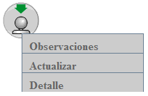
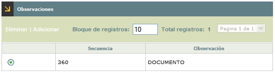
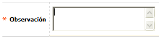
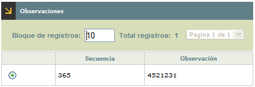
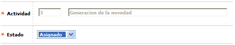
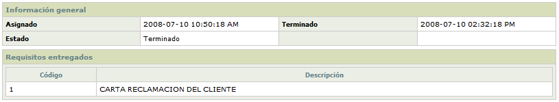

Atención de Reclamos |
Estado de actividades: Cuando el actor invoque este formulario, el sistema mostrará el flujo de actividades correspondientes al tipo de reclamo seleccionado según lo parametrizado en la opción Actividades.
Cuando se utiliza esta opción, se despliega un formulario con el ciclo de actividades el cual cuenta con un botón para devolverse a la opción principal Atención de reclamos.
Las actividades que se despliegan pueden tener estados diferentes como los siguientes:
Asignadas no vencidas: Indica que la actividad ha sido asignada a través de la opción Reclamos, pero el tiempo de duración establecido en la opción Actividades no se ha cumplido; por lo tanto aún no se ha vencido.
|
Asignadas vencidas: Indica que la actividad ha sido asignada a través de la opción Reclamos, pero el tiempo de duración establecido en la opción Actividades ya se cumplió; por lo tanto está vencida.
|
Reasignadas: Indica que la actividad ha sido reasignada a otro gestor diferente al inicial a través de la opción Maestro de reclamos, y pueden estar vencidas o no, según si el tiempo de duración establecido en la opción Actividades ya se cumplió o no.
|
|
Canceladas: Indica que el gestor ha cancelado la actividad a través de esta misma opción o de la opción Maestro de reclamos. Dicho estado no se vuelve a modificar. Las actividades solo se pueden cancelar mientras no estén Terminadas.
|
|
Terminadas: Indica que el gestor ha finalizado la actividad correctamente a través de esta misma opción o de la opción Maestro de reclamos. Dicho estado no se vuelve a modificar. |
Cuando el usuario utiliza el click izquierdo del mouse sobre las actividades, se pueden desplegar tres opciones diferentes:

Observaciones: Esta opción se despliega para todas las actividades, teniendo en cuenta que si la actividad se encuentra asignada o reasignada, el usuario podrá ingresar o eliminar dichas observaciones, mientras que si la actividad está cancelada o terminada, estas observaciones sólo se podrán consultar.
Cuando la actividad está asignada o reasignada, el formulario desplegado contiene las opciones Eliminar y Adicionar, y un botón para devolverse a la gráfica completa de las actividades.

Adicionar: Si el usuario invoca la opción Adicionar se despliega un formulario con el siguiente campo:

Observación |
Campo alfanumérico de 4000 posiciones, obligatorio, en el cual se registra la observación correspondiente para cerrar la actividad del reclamo. Para poder cancelar o terminar una actividad, el sistema siempre exige el diligenciamiento previo de por lo menos una observación. |
Cuando la actividad está cancelada o terminada, se despliega el siguiente formulario, y cuenta con un botón para devolverse a la gráfica completa de las actividades.

Actualizar: Si el usuario invoca la opción Actualizar se despliega un nuevo formulario en el cual el único campo modificable es el Estado. Esta opción sólo se muestra cuando la actividad está asignada o reasignada, de lo contrario, no se refleja.

Actividad
Campo de salida que contiene el código y descripción de la actividad a la cual se le va a modificar el estado.
Estado Campo tipo combo obligatorio, en el cual el usuario puede seleccionar entre Cancelado o Terminado según la solución que le vaya a dar a la actividad correspondiente. El sistema valida que las actividades se cancelen o terminen en el mismo orden en el cual se crearon.
Detalle: Si el usuario invoca la opción Detalle se despliega el siguiente formulario el cual contendrá la información detallada de la actividad y su trámite. Esta opción se refleja para todas las actividades.
